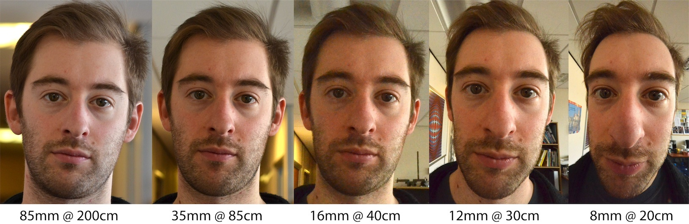

Фокусное расстояние
Главный параметр объектива. Расстояние от плоскости передней линзы до сенсора.
Бывают объективы с переменным фокусным расстоянием ("зумы") и с постоянным ("фиксы"). Чем больше этот параметр - тем больший зум можно получить, но тем меньше угол обзора.

-
до 35 мм (от 63°) - широкоугольный ("ширик"). Большой угол обзора, меньшая зависимость от "шевеленки". Пейзаж, архитектура, интерьер. Не подходит для портретной съемки - искажает геометрию, наибольшая глубина резкости.
-
от 35 до 85 мм (43° - 65°) - портретный ("портретник"). Нормальный, среднефокусный. Портретная и предметная съемка с близкого расстояния. Меньше искажают геометрию. Близко к естественному зрению человека. (85 мм также часто используется для макросъёмки).
-
от 85 мм (от 28°) до 800 мм и более - теле ("телевик"), спорт, длиннофокусный. Удаленные объекты крупным планом. Крупные габариты, обеспечивают наименьшую глубину резкости, сильное размытие фона.
Назначение
-
16 mm - пейзажи, архитектура, небо, ландщафт, город, общий план, интерьер, ночная съёмка города. В основном используют с закрытой диафрагмой, чтобы была максимальная глубина резкости и был видет передний, средний и дальный план (f 9-13). Для длинных выдержек, если съёмка ночного пейзажа или творческого размытия нужен штатив. Не для портретов, так как искажает пропорции. Астро-фото.
-
35 mm - заснять какое-то действо в кадре. "Человек + реквизит", человек на фоне природы, что-то делает, позиционирует себя. Групповые фото (f5 - 8), чтобы все лица были в резкости. Здесь не нужно сильно размывать фон, фон здесь важен, часто важен персонаж и реквизит. Выделение объекта в массе чего-либо. "Enviroment portrait", человек в среде. Instagram, видео-блог, документалистика, репортаж, сцена, тревел-фотография, уличная фотография.
-
50 mm - поясной и ростовой портретник, не очень подходит для групповых фото. Размытие фона, фон уже менее важен, выделение человека или объекта, фокус именно на одном объекте, творческое выделение чего-либо из общей массы. Идельное сохранение пропорций, �выглядит натурально, предметная фотосъёмка.
-
85 mm - портреты крупным планом, сильное размытие фона (кремовое боку), акцент на лице, детализация, макро-съёмка. Предметка с заточкой под макро, ювелирка, цветы, насекомые.
-
100 mm и более - узкий угол обзора, съёмка удалённых объектов, к которым нельзя приблизиться ногами. Минимальная глубина резкости. Выделить что-то издалека. Репортаж, спорт, птицы, дикие животные и т. д. Можно снимать портреты тоже с зумированием на расстоянии, только лица будут получаться "более округлыми, как будто немного плоскими" (иногда такой эффект выглядит даже красивее, чем при съёмке на чисто портретные объективы)